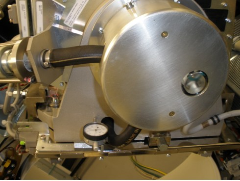

Operating Documentation
Direction 5193575-800, Rev# 5
LightSpeed 7.X Service Information - Adv
Operating Documentation |
| Required Persons | Preliminary Reqs | Procedure | Finalization |
|---|---|---|---|
| 1 | Timing Not Applicable | 30 mins | Timing Not Applicable |
The purpose of the Z-Alignment procedure is to align the X-Ray Tube with the Detector and Collimator.
| Last Revised: | 23 October 2008 |
| Item | Qty | Effectivity | Part# | Manufacturer | |
|---|---|---|---|---|---|
| Dial Indicator | 1 | - | - | - | |
| Condition | Reference | Eff |
|---|---|---|
For Performix Pro VCT 100 X-Ray Tube and Performix HD X-Ray Tube. | - | - |
Recommended the procedure is completed by trained personnel. | - | - |
Tube Temperature <200° C | - |
If this procedure execution is not due to another service procedure, complete the following preparation steps:
Move table to home position.
Remove gantry right side cover.
Turn OFF [HVDC ENABLE] , [AXIAL DRIVE ENABLE] and [120 VAC] switches on Service Switch panel.
Remove scan window, gantry left side cover, gantry top covers and gantry front cover.
Turn ON [120 VAC] , [AXIAL DRIVE ENABLE] and [HVDC ENABLE] switches on Service Switch panel.
Select [CALIBRATION] tab from Service Desktop.
Select [Z ALIGN] .
Click [MOVE] from Z-Align tool.
Verify [DESIRED TUBE POSITION] from Tube Position window is 0.
Click [OK] from Tube Position window if [CURRENT TUBE POSITION] is not 0.
Click [DISMISS] from Tube Position window.
Click [SCAN] from Z-Align tool.
Press [START] on SCIM when it flashes.
| NOTE: | If one or more tube spits occur, repeat steps 7 and 8. |
Click [CALCULATE] from Z-Align tool.
If Z-Align tool displays both messages : “Z-Axis Tube Alignment PASSES Specification” and “Detector Skew PASSES Specification,” skip Mechanical Alignment.
| NOTE: | If “Z-Axis Tube Alignment PASSES Specification” and “Detector Skew FAILS Specification,” check collimator and detector functionalities, perform appropriate corrective action, and retest. |
Turn OFF [HVDC ENABLE] , [AXIAL DRIVE ENABLE] and [120 VAC] switches on Service Switch panel.
Manually rotate gantry until X-Ray tube reaches 2 o'clock position.
Engage rotational lock.
Mount dial indicator gauge on Z-axis mounting bracket, located on tube assembly front face, with gauge's probe resting perpendicular to tube casting's front face ( Illustration 1).
Illustration 1: Dial Indicator Mounting Location

Set dial of gauge to zero (0).
Loosen the four M-12 mounting bolts on tube assembly about 1/4 to 1/2 turns.
Turn Z-axis adjustment screw, located on tube assembly front face, in direction specified by Z-Align tool, until dial indicator shows Z-Align calculated value.
EXAMPLE: “Z-Align Adjust 5.000 mm 200.000 mils (move towards gantry).”
| NOTE: | 1 mil is equal to 0.001 inches. Turn adjustment screw counterclockwise for “move towards gantry.” Turn adjustment screw clockwise for “move away from gantry.” |
Tighten the four M12 mounting bolts on tube assembly in a cross pattern configuration to the following torque values:
| 49 ft-lbs | 66 N-m | 590 in-lbs | 680 kg-cm |
| NOTE: | Ensure the dial indicator value does not change during the tightening procedure. |
Disengage rotational lock.
Turn ON [120 VAC] , [AXIAL DRIVE ENABLE] and [HVDC ENABLE] switches on Service Switch panel.
Click [RESTART] from Z-Align tool and repeat Section 4.2, Steps 3 - 9 to re-check adjustment.
Repeat section 4.3 until Z-Align tool displays both messages: “Z-axis Tube Alignment PASSES Specification” and “Detector Skew PASSES Specification.”
| NOTE: | If “Z-axis Tube Alignment PASSES Specification” but “Detector Skew FAILS Specification,” check collimator and detector functionalities, perform appropriate corrective action, and retest. |
If procedure execution was due to another service procedure, return to associated service procedure.
If procedure execution was not due to another service procedure, perform Cold ISO Alignment.